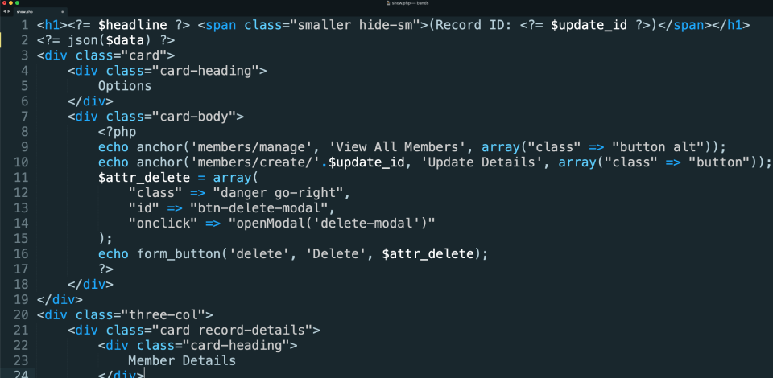
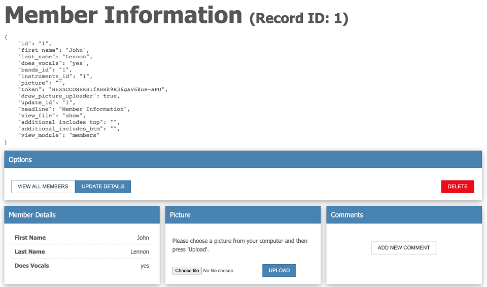

$input</strong> ~ The string to be escaped.
The Trongate framework has some useful features that are not part of a particular helper file or class. Nevertheless, these features do form an essential part of the framework and they can assist in making web development faster. The following features can be invoked from within any module controller file or view file:
The 'anchor' function can be used to produce a clickable text link that leads to a URL that has been set relative to your BASE_URL.
For example, let's assume that you own the website example.com. So, this means that your homepage might be available at https://example.com. If you had a contact us form at https://example.com/contact then you could use the anchor function to produce a clickable text link that takes visitors to the contact page. The syntax for doing this is:
<?= anchor("contact", "Get In Touch") ?>The anchor text function accepts up to four arguments. They are:
PLEASE NOTE: The anchor function can be used to generate links to external websites. Simply add the full target URL as an argument and a valid link will be produced.
Another useful feature that's baked into the Trongate framework is the 'IP address' function. The IP Address Function can be used to return the IP address of whomever is accessing your webpage. The syntax for this function is as follows:
ip_address();For example,
//assuming that this is a view file
Your IP Address is <?= ip_address() ?>.
Trongate has an inbuilt make_rand_str() function that can be used to generate random strings. An example of how to use this is shown below:
$str = make_rand_str(32);The numeric argument that has been passed in represents the length of the random string to be generated. If the boolean value of true is also passed into the make_rand_str() method, as a second argument, then the random string that's produced will be in upper case.
For example,
$code = make_rand_str(6, true);
echo $code; //displays something like "A4WX28"
If you would like to get the file path (within your computer or server) that leads to your web application, you can do so by calling upon the APPPATH constant. For example:
<?= APPPATH ?>The BASE_URL constant is also accessible throughout the Trongate framework. Use this if you would like to return the main URL of your website, as defined inside config.php. For example:
<?= BASE_URL ?>Trongate also comes with a built-in json() function for helping developers to see a visual representation of data that's available, either inside a controller or a view file. The syntax for the json() function is shown below:
json($data);
The first argument (in this case, $data) represents the data to be displayed. Please note that the json() method can also contain a second argument of true. If true is passed into json(), as a second argument then a die(); statement is immediately executed after the data has been displayed and all PHP code on the page will stop running.
In the screenshot below, the json() method has been applied to a view file, on line two, to produce a visual summary of the contents of a $data array:

Here's a screenshot of the output from the code above. Notice the collection of nicely formatted data near the top left-hand side of the screenshot:

This function is designed to safely escape and format strings for various output contexts. It accepts the following parameters:
The function returns a string that has been escaped and formatted, ready for safe inclusion in the specified context. This function is crucial for securing output data in different contexts, preventing potential security vulnerabilities like cross-site scripting (XSS) attacks.
Suppose you've retrieved data from a JSON string and want to safely display it on a webpage:
$jsonString = "{"name": "<script>alert(\"XSS Attack\");</script>", "age": 25}";
$data = json_decode($jsonString, true);
// Outputting data from JSON after using the "out()" function for JSON context
echo "<p>Name: ".out($data["name"], "json")."</p>";
echo "<p>Age: ".out($data["age"], "json")."</p>";
Assuming you've fetched data from a database and want to display it securely on a webpage:
echo out($name);
echo out($email);